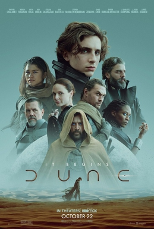

Elıf Maralı
Hakkımda
ß
Merhaba ben Elıf Marlı.Istanbulda yasiyorum.Gerilim ve aksiyon dizileri
izlemeyi severim.Web gelistirme alaniyla ilgileniyorum.Dogus
universitesinde Yazilim Muhendisligi okuyorum.
Ilgi Alanlarim
1. Film
- The Big Lebowski
- The Big Brothers
- Needesin Firuze
2. Film
- Star Trek
- Baatlestar Galactica
- The IT Crowd
3. Film
- Yerdeniz
- Dune
- Androidler Elektrikli Koyun Dusler Mi?
Sevdigim Diziler

Bilim kurgu klasikleri arasında yer alan Dune'un yeni sinema uyarlaması,
serinin ilk kitabını kaynak alarak Dune evrenini ve ana karakter Paul
Atreides’in etrafında gelişen olayları konu ediniyor.